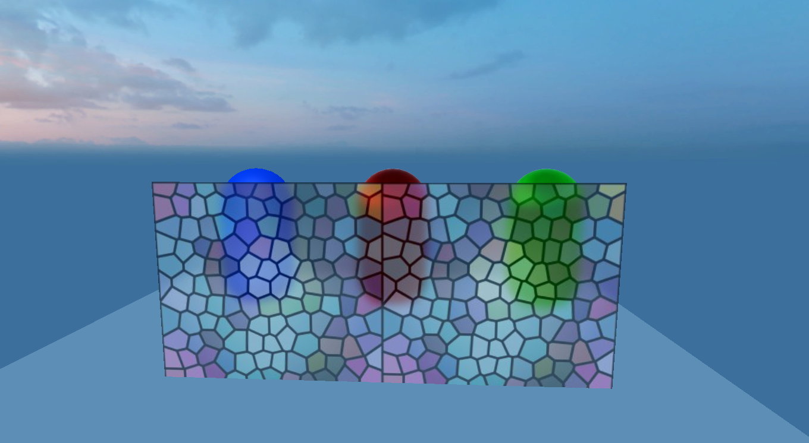

CommandBuffer文档
1.简介
CommandBuffer为渲染命令缓冲区，保存了渲染命令列表。当我们将一些渲染指令添加到CommandBuffer后，可以实现对渲染流程的控制，将这些指令在我们想要的时机进行执行。command buffer设置渲染目标或绘制给定网格，可以设置在摄像机渲染期间的不同点执行
CommandBuffer是一个高阶的3D渲染功能，用来拓展LayaAir引擎渲染管线的渲染效果。在实现毛玻璃（玻璃透明模糊感）、轮廓透视描边或者边缘光效、沙滩脚印、景深等等效果时非常好用，懂的人都明白，CommandBuffer非常强大，也是3A级大作经常用到的渲染功能，并且不会有额外的功能损耗，甚至某些效果比其它方案更省性能，是一种小游戏平台中也可以用来加强3D渲染效果的渲染扩展功能
2.使用步骤
1.创建好CommandBuffer后，添加渲染指令给CommandBuffer
添加代码接口如下：
var buf:CommandBuffer = new CommandBuffer();buf.setRenderTarget(renderTexture);buf.drawRender(renders[i],materials[i],0);
2.需要将CBuffer绑定到Camera的渲染事件中，目前laya支持的Camera事件如下：
BeforeForwardOpaque = 0,//在渲染非透明物体之前BeforeSkyBox = 2,//在渲染天空盒之前BeforeTransparent = 4,//在渲染透明物体之BeforeImageEffect = 6,//在后期处理之前AfterEveryThing = 8,//所有渲染之后
添加CommandBuffer到相机事件的接口如下：
this.camera.addCommandBuffer(this.cameraEventFlag,this.commandBuffer);
删除CommandBuffer的接口如下：
this.camera.removeCommandBuffer(this.cameraEventFlag,this.commandBuffer);
CommandBuffer是一个渲染指令集，组成这个渲染指令集的是一个一个的独立的渲染指令
setShaderData//设置shader数据，可以设置shader中的texture vector number等 setGlobalShaderData//设置全局数据，可以用于所有的shaderblitScreenQuad//通过全屏四边形将源纹理渲染到目标渲染纹理指令。blitScreenQuadByMaterial//通过全屏四边形将源纹理渲染到目标渲染纹理指令setRenderTarget//设置指令渲染目标，调用后，所有的渲染都会渲染到方法绑定的图片上clearRenderTarget//清理绑定的渲染纹理drawMesh//渲染一个MeshdrawRender//渲染一个Render
可以组合不同的渲染指令然后放入不同的渲染流程，下面具体分析官方示例来更好的理解一下CommandBuffer的用法。
3.使用示例
3.1.BlurryGlass示例（毛玻璃示例）
效果图

示例原理
毛玻璃属于透明材质，后面的三个胶囊体都是非透明材质，所以我们需要每帧将毛玻璃模型后面的所有渲染物体全部拿出，进行模糊，再将图片按屏幕uv采样到毛玻璃上面，便可以实现这样的效果
示例代码
createCommandBuffer(camera:Camera){
//当需要在渲染透明物体之前拿到摄像机渲染结果，所以调用下面的属性true
camera.enableBuiltInRenderTexture = true;
//创建CommandBuffer
var buf:CommandBuffer = new CommandBuffer();
//创建需要模糊使用的屏幕RenderTexture
var viewPort:Viewport = camera.viewport;
//创建新的RenderTexture
var renderTexture = RenderTexture.createFromPool(viewPort.width,viewPort.height,RenderTextureFormat.R8G8B8,RenderTextureDepthFormat.DEPTHSTENCIL_NONE);
this.texture = renderTexture;
//将当前渲染的结果拷贝到创建好的RenderTexture
buf.blitScreenTriangle(null,renderTexture);
//获得模糊shader
var shader:Shader3D = Shader3D.find("blurEffect");
//设置模糊参数
var shaderValue:ShaderData = new ShaderData();
//down Sample level设置降采样等级
var downSampleFactor:number = 4;
var downSampleWidth:number = viewPort.width/downSampleFactor;
var downSampleheigh:number = viewPort.height/downSampleFactor;
//设置模糊材质参数
var texSize:Vector4 = new Vector4(1.0/viewPort.width,1.0/viewPort.height,viewPort.width,downSampleheigh);
shaderValue.setNumber(BlurEffect.SHADERVALUE_DOWNSAMPLEVALUE,1);
shaderValue.setVector(BlurEffect.SHADERVALUE_TEXELSIZE,texSize);
//创建降采样RenderTexture1
var downRenderTexture = RenderTexture.createFromPool(downSampleWidth,downSampleheigh,RenderTextureFormat.R8G8B8,RenderTextureDepthFormat.DEPTHSTENCIL_NONE);
//降采样命令流
buf.blitScreenTriangle(renderTexture,downRenderTexture,null,shader,shaderValue,0);
//创建降采样RenderTexture2
var blurTexture:RenderTexture = RenderTexture.createFromPool(downSampleWidth,downSampleheigh,RenderTextureFormat.R8G8B8,RenderTextureDepthFormat.DEPTHSTENCIL_NONE);
blurTexture.filterMode = FilterMode.Bilinear;
//Horizontal blur
buf.blitScreenTriangle(downRenderTexture,blurTexture,null,shader,shaderValue,1);
//vertical blur
buf.blitScreenTriangle(blurTexture,downRenderTexture,null,shader,shaderValue,2);
//Horizontal blur
buf.blitScreenTriangle(downRenderTexture,blurTexture,null,shader,shaderValue,1);
//vertical blur
buf.blitScreenTriangle(blurTexture,downRenderTexture,null,shader,shaderValue,2);
//至此 模糊图片已经生成在downRenderTexture中
//设置全局uniform变量
var globalUniformNameID:number = Shader3D.propertyNameToID("u_screenTexture");
//将全局变量u_screenTexture赋值为模糊图片
buf.setGlobalTexture(globalUniformNameID,downRenderTexture);
//将commandBuffer加入渲染流程
camera.addCommandBuffer(CameraEventFlags.BeforeTransparent,buf);
//回收用过的RenderTexture
RenderTexture.recoverToPool(downRenderTexture);
RenderTexture.recoverToPool(blurTexture);
return;
}
3.2.OutLine示例（轮廓线描边）
效果图：

示例原理：
在渲染完成之后，绑定另外一个黑色的Rendertexture，重新画好粒子，Box，猴子为纯红色，再将图片模糊，模糊图片颜色减去没模糊的图片，就能得到渲染边框，最后将渲染边框重新加到渲染好的画布上面，便可实现轮廓效果
代码如下
createDrawMeshCommandBuffer(camera:Camera,renders:BaseRender[],materials:Material[]):CommandBuffer{
var buf:CommandBuffer = new CommandBuffer();
//当需要在流程中拿摄像机渲染效果的时候 设置true
camera.enableBuiltInRenderTexture = true;
//创建和屏幕一样大的Rendertexture
var viewPort:Viewport = camera.viewport;
var renderTexture = RenderTexture.createFromPool(viewPort.width,viewPort.height,RenderTextureFormat.R8G8B8A8,RenderTextureDepthFormat.DEPTHSTENCIL_NONE);
//将RenderTexture设置为渲染目标
buf.setRenderTarget(renderTexture);
//清楚渲染目标的颜色为黑色，不清理深度
buf.clearRenderTarget(true,false,new Vector4(0,0,0,0));
//将传入的Render渲染到纹理上
for(var i = 0,n = renders.length;i<n;i++){
buf.drawRender(renders[i],materials[i],0);
}
//创建新的RenderTexture
var subRendertexture = RenderTexture.createFromPool(viewPort.width,viewPort.height,RenderTextureFormat.R8G8B8A8,RenderTextureDepthFormat.DEPTHSTENCIL_NONE);
//将renderTexture的结果复制到subRenderTexture
buf.blitScreenQuad(renderTexture,subRendertexture);
//设置模糊的参数
var downSampleFactor:number = 2;
var downSampleWidth:number = viewPort.width/downSampleFactor;
var downSampleheigh:number = viewPort.height/downSampleFactor;
var texSize:Vector4 = new Vector4(1.0/viewPort.width,1.0/viewPort.height,viewPort.width,downSampleheigh);
//创建模糊材质
var blurMaterial:BlurMaterial = new BlurMaterial(texSize,1);
//创建降采样RenderTexture1
var downRenderTexture = RenderTexture.createFromPool(downSampleWidth,downSampleheigh,RenderTextureFormat.R8G8B8,RenderTextureDepthFormat.DEPTHSTENCIL_NONE);
//降采样 使用blurMaterial材质的0SubShader将Rendertexture渲染到DownRendertexture
buf.blitScreenQuadByMaterial(renderTexture,downRenderTexture,null,blurMaterial,0);
//创建降采样RenderTexture2
var blurTexture:RenderTexture = RenderTexture.createFromPool(downSampleWidth,downSampleheigh,RenderTextureFormat.R8G8B8,RenderTextureDepthFormat.DEPTHSTENCIL_NONE);
blurTexture.filterMode = FilterMode.Bilinear;
//Horizontal blur 使用blurMaterial材质的1SubShader
buf.blitScreenQuadByMaterial(downRenderTexture,blurTexture,null,blurMaterial,1);
//vertical blur 使用blurMaterial材质的2SubShader
buf.blitScreenQuadByMaterial(blurTexture,downRenderTexture,null,blurMaterial,2);
//Horizontal blur 使用blurMaterial材质的1SubShader
buf.blitScreenQuadByMaterial(downRenderTexture,blurTexture,null,blurMaterial,1);
//vertical blur 使用blurMaterial材质的2SubShader
buf.blitScreenQuadByMaterial(blurTexture,downRenderTexture,null,blurMaterial,2);
//在命令流里面插入设置图片命令流，在调用的时候会设置blurMaterial的图片数据
buf.setShaderDataTexture(blurMaterial._shaderValues,BlurMaterial.SHADERVALUE_SOURCETEXTURE0,downRenderTexture);
buf.setShaderDataTexture(blurMaterial._shaderValues,BlurMaterial.ShADERVALUE_SOURCETEXTURE1,subRendertexture);
//caculate edge计算边缘图片
buf.blitScreenQuadByMaterial(blurTexture,renderTexture,null,blurMaterial,3);
//重新传入图片
buf.setShaderDataTexture(blurMaterial._shaderValues,BlurMaterial.SHADERVALUE_SOURCETEXTURE0,renderTexture);
//将camera渲染结果复制到subRendertexture，使用blurMaterial的4通道shader
buf.blitScreenQuadByMaterial(null,subRendertexture,null,blurMaterial,4);
//将subRenderTexture重新赋值到camera的渲染结果上面
buf.blitScreenQuadByMaterial(subRendertexture,null);
return buf;
}